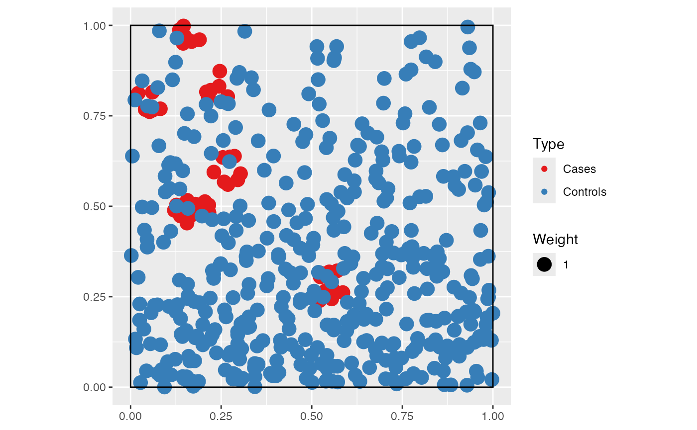
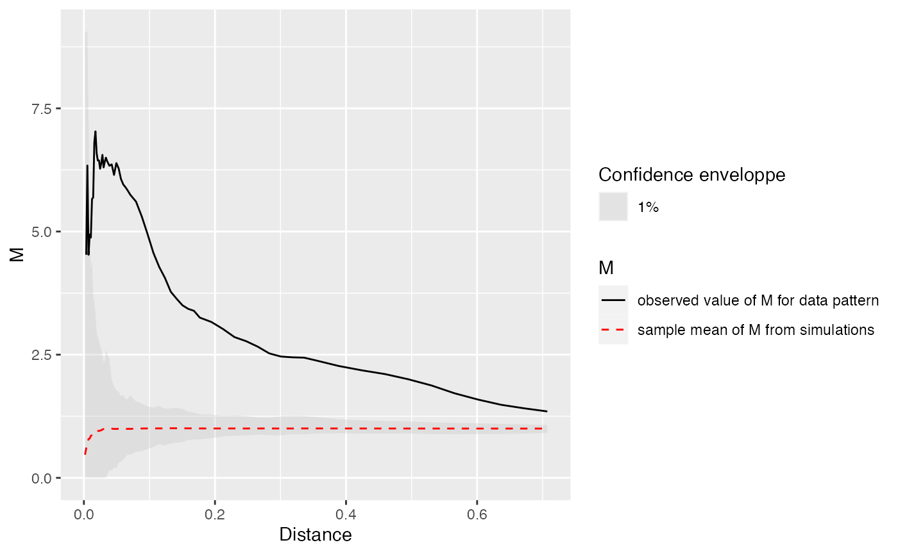
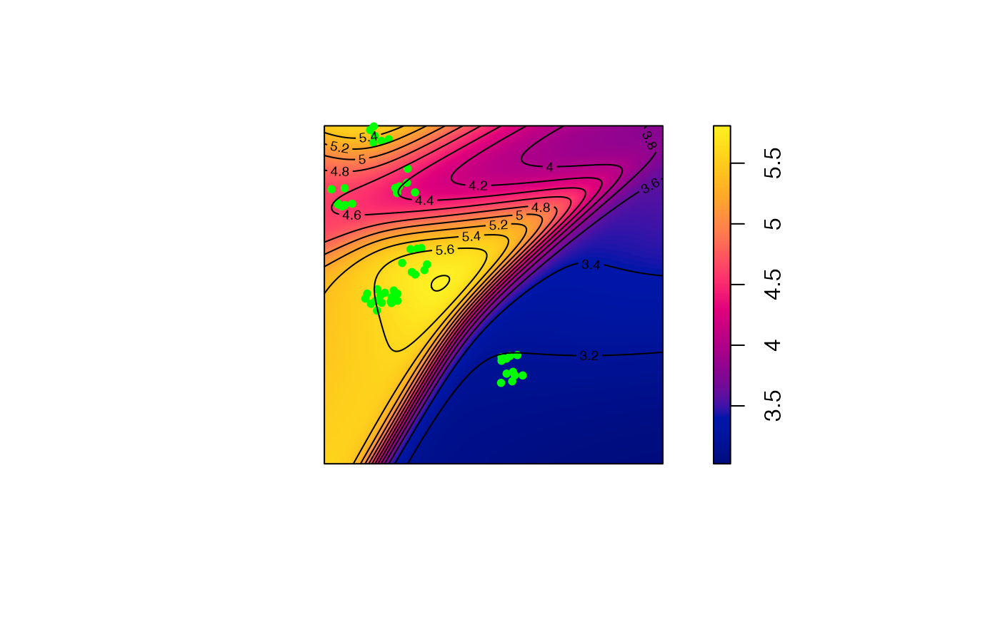
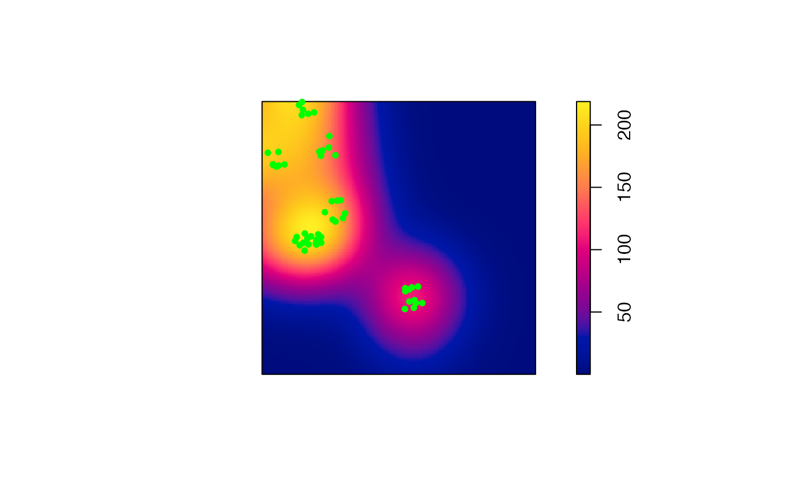

Local values of distance-based measures of spatial concentration can be mapped (Marcon and Puech (2023)).
Dataset simulation
We build a point pattern made of cases (the points of interest) and controls (the background distribution of points).
Cases are a Matérn (Matérn 1960) point pattern with \(\kappa\) (expected) clusters of \(\mu\) (expected) points in a circle of radius scale. Controls are a Poisson point pattern whose density \(\lambda\) decreases exponentially along the y-axis (we will call “north” the higher y values).
library("dplyr")
library("dbmss")
# Simulation of cases (clusters)
rMatClust(kappa = 10, scale = 0.05, mu = 10) %>%
as.wmppp ->
CASES
CASES$marks$PointType <- "Cases"
# Number of points
CASES$n## [1] 54
# Simulation of controls (random distribution)
rpoispp(function(x, y) {1000 * exp(-2 * y)}) %>%
as.wmppp ->
CONTROLS
CONTROLS$marks$PointType <-"Controls"
# Number of points
CONTROLS$n## [1] 427
# Mixed patterns (cases and controls)
ALL <- superimpose(CASES, CONTROLS)
autoplot(ALL)
Calculate and plot M Cases
# Fix the number of simulations and the level of risk
NumberOfSimulations <- 1000
Alpha <- .01
# Calculate and plot M Cases
ALL %>%
MEnvelope(
ReferenceType="Cases",
SimulationType = "RandomLocation",
NumberOfSimulations = NumberOfSimulations,
Alpha = Alpha,
Global = TRUE
) ->
M_env_cases
autoplot(M_env_cases)
The plot shows a clear relative concentration of cases.
Map M results
To plot the individual values of M around each case, a distance must be chosen. Then, the function must be computed at this distance with individual values. Finally, a map is produced by smoothing the individual values and plotted.
# Choose the distance to plot
Distance <- 0.1
# Calculate the M values to plot
ALL %>%
Mhat(
r = c(0, Distance),
ReferenceType = "Cases",
NeighborType = "Cases",
# Individual must be TRUE
Individual = TRUE
) ->
M_TheoEx
# Map resolution
resolution <- 512
# Create a map by smoothing the local values of M
M_TheoEx_map <- Smooth(
# First argument is the point pattern
ALL,
# fvind contains the individual values of M
fvind = M_TheoEx,
# Distance selects the appropriate distance in fvind
distance = Distance,
Nbx = resolution, Nby = resolution
)
# Plot the point pattern with values of M(Distance)
plot(M_TheoEx_map, main = "")
# Add the cases to the map
points(
ALL[ALL$marks$PointType == "Cases"],
pch = 20, col = "green"
)
# Add contour lines
contour(M_TheoEx_map, add = TRUE)
We can see that cases are concentrated almost everywhere (local M value above 1) because we chose a Matérn point pattern.
The areas with the higher relative concentration are located in the north of the map because the controls are less dense there.
Compare with the density of cases
The density of cases is plotted. High densities are not similar to high relative concentrations in this example because the control points are not homogeneously distributed.
plot(density(CASES), main = "")
points(
ALL[ALL$marks$PointType == "Cases"],
pch = 20, col = "green"
)